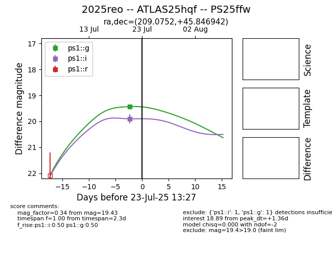

Target 2025reo at 2025-07-23 13:27, see:
TNS: wis-tns.org/object/2025reo
YSE: ziggy.ucolick.org/yse/transient_detail/2025reo
alt names
2025reo (yse,tns)
ATLAS25hqf (atlas)
PS25ffw (panstarrs)
coordinates:
equatorial (ra, dec) = (209.0752,+45.84694)
galactic (l, b) = (92.6823,+67.28579)
photometry
last ps1::g=19.43, ps1::i=19.90
1 ps1::g, 1 ps1::i detections
